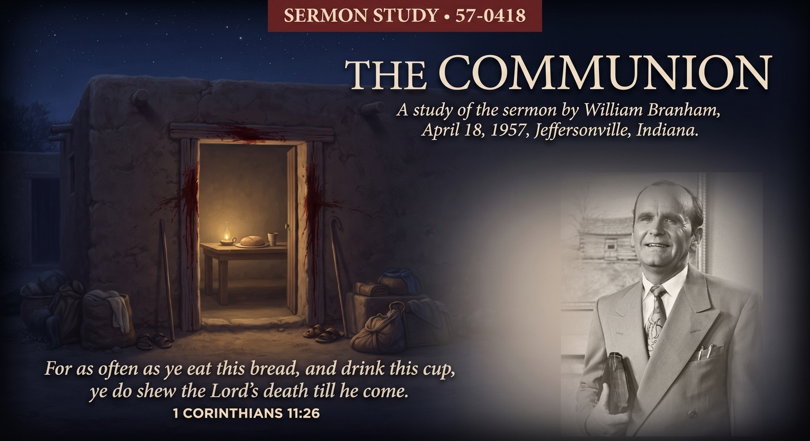

William Branham · April 18, 1957 · Branham Tabernacle, Jeffersonville, Indiana
♫ Listen to or read the full sermon at Voice Of God Recordings →

This message was preached on a Thursday night, the same night of the week Jesus kept the Passover with His disciples before the cross, and it was delivered as part of a communion and feet washing service, the way it still is at Branham Tabernacle every year on that same night. Brother Branham doesn't build his text from the Gospels first. He goes back to Exodus 12, to a much older table, and lets that older meal explain the one the church was about to keep.
Look at how Exodus 12 actually describes that first Passover. It wasn't eaten reclining at leisure. It was eaten with loins girded, sandals already on the feet, staff already in hand, in haste, a household dressed and ready to walk out the door the moment the word came. Brother Branham fastens onto that detail on purpose. The blood on the doorposts didn't buy Israel a night of rest. It bought them safe passage through a night they spent on their feet, ready to move.
The death angel, Brother Branham points out, had to rise and pass over the houses marked with blood. It could not go beneath that blood to touch anyone inside. That's the picture he builds communion on: not a symbolic gesture performed near the idea of the blood, but an actual position underneath it, a covering a person either has or doesn't. Coming to the table, in his reading, means first being certain that covering is real, cleansed of the unbelief scripture calls sin, before the bread and cup mean anything at all.
This is where the sermon stops being only about the meal and becomes about the posture of the person eating it. Communion, in Brother Branham's picture, isn't a pause in an otherwise ordinary life. It's a household already separated from the things around it, already girded, already shod, holding its staff, because it doesn't know what hour the summons comes. A person can go through the motions of the bread and the cup and still be sitting down comfortably inside a life that never got dressed for the road.
Preaching this on the actual eve of the crucifixion's yearly remembrance wasn't a scheduling convenience. Brother Branham is asking a room full of people, on the one night of the year built for exactly this question, whether they are living like Israel on that first Passover night, ready at any moment, or living like people who have quietly unpacked, put the staff down, and settled in. The blood on the door was never meant to be background scenery for a comfortable evening. It was meant to be the last thing a household did before they moved.
Source: The Communion, preached April 18, 1957. Text © Voice Of God Recordings. This study reflects my own understanding of the message as a believer, not a verbatim reproduction of the sermon.
← Back to Sermon Studies